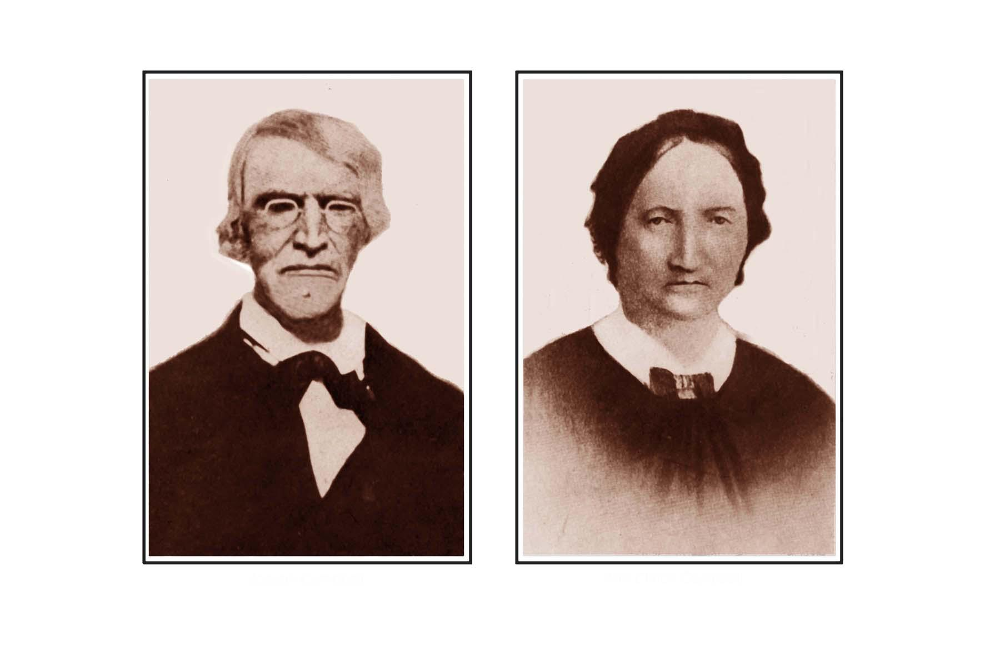

CAMPBELL COUSINS CORRESPONDENCE

O U R A N C E S T O R S
Joseph Campbell, Son of Joseph and Mary Harper Campbell,‑
Born in Ireland, December 24th, 1793.
Died at Nelson, Pa., January 10th, 1864.
* * * * *
Married February 29th, 1822.
* * * * *
Ann Clinch, His Wife,-
Born in England, January 27th, 1804.
Died at Nelson, Pa., February 21st; 1878.
* * * * *
Above photographs furnished through kindness of Cousin C. H. Congdon.
* * *
‑ Report No. 2 ‑ Page "A" ‑